6 clean detections (σ≈1): mahi, oran, johndoeII, whitney, phineas, isha · 2 marginal: wilhelm, hamilton · 3 fail: chromatica, freya, zach (freya/zach under-dedispersed) · casey pending.
| burst | model | τ₁GHz (ms) | ζ (ms) | χ²/dof | resid σ | verdict |
|---|---|---|---|---|---|---|
| mahi | M2 | 0.212 (+0.015/−0.014) | — (M2) | 1.053 | 1.03 | detection (M2: scattering-only) |
| oran | M3 | 0.540 (+0.063/−0.059) | 1.95 | 1.058 | 1.03 | detection |
| johndoeII | M3 | 0.143 (+0.0055/−0.0048) | 0.12 | 1.120 | 1.06 | detection |
| whitney | M2 | 0.117 (+0.0057/−0.0053) | — (M2) | 1.164 | 1.08 | detection (M2: scattering-only) |
| phineas | M3 | 0.274 (+0.011/−0.011) | 1.26 | 1.199 | 1.10 | detection |
| isha | M3 | 0.290 (+0.016/−0.014) | 0.78 | 1.216 | 1.10 | detection |
| wilhelm | M3 | 0.144 (+0.0055/−0.0054) | 0.17 | 1.704 | 1.31 | marginal |
| hamilton | M2 | 0.020 (+0.0002/−0.0002) | — (M2) | 3.362 | 1.83 | marginal |
| chromatica | M3 | 0.114 (+0.0009/−0.0008) | 0.46 | 5.113 | 2.26 | poor fit |
| freya | M2 | 0.150 (+0.0006/−0.0007) | — (M2) | 9.560 | 3.09 | FAIL — under-dedispersed |
| zach | M3 | 0.262 (+0.0009/−0.0009) | 0.16 | 22.000 | 4.68 | FAIL — under-dedispersed |
MAHI detection (M2: scattering-only)
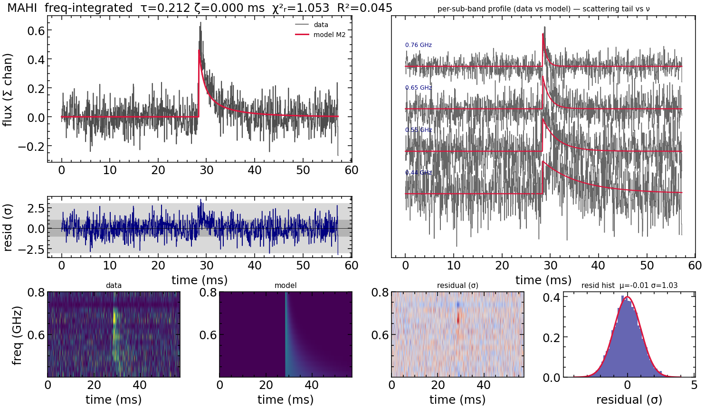
ORAN detection
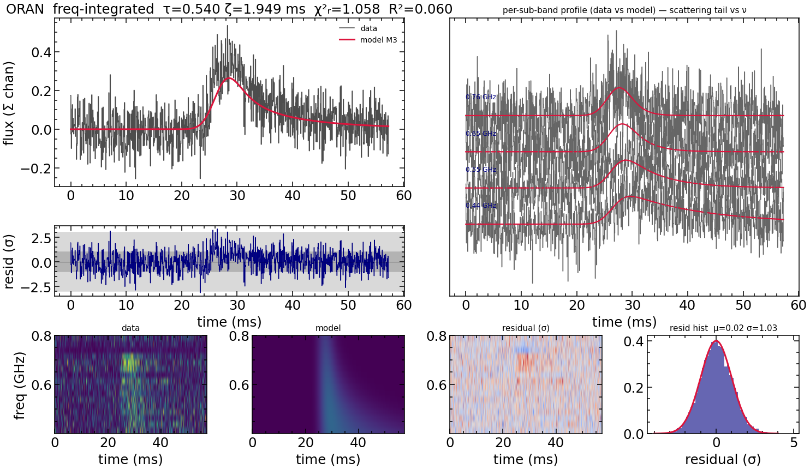
JOHNDOEII detection
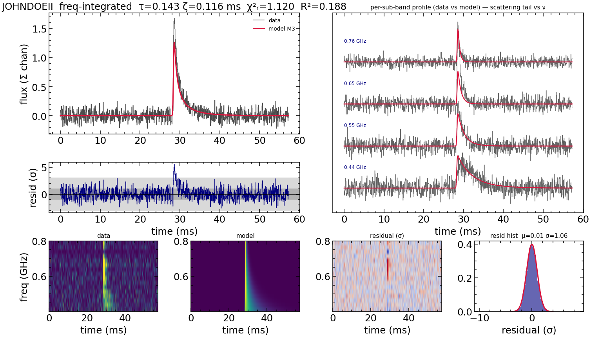
WHITNEY detection (M2: scattering-only)
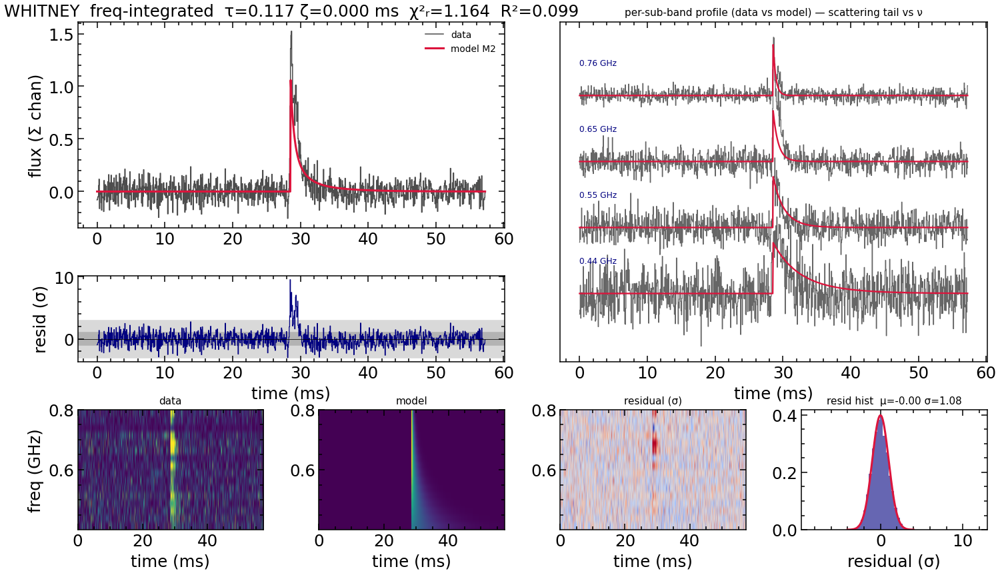
PHINEAS detection
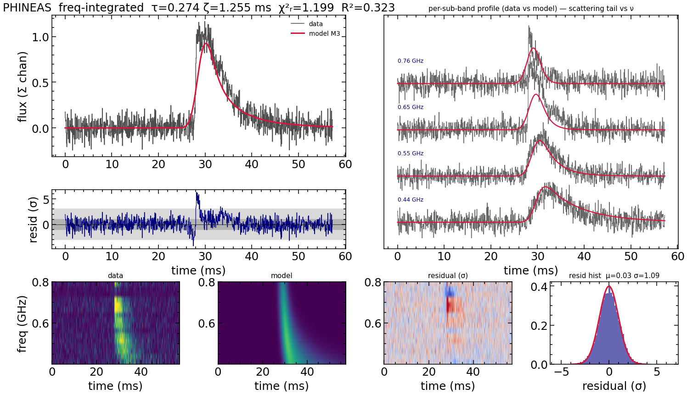
ISHA detection
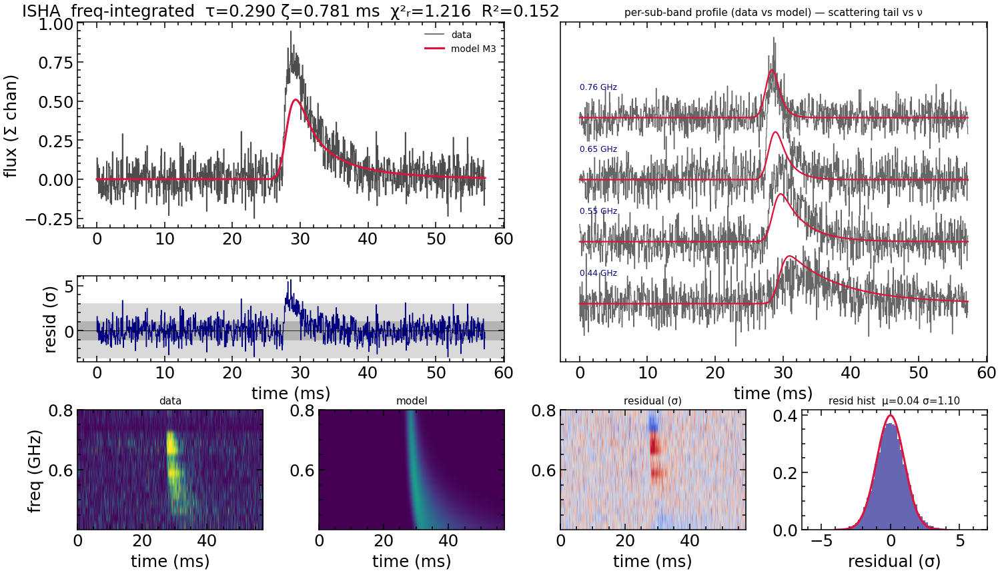
WILHELM marginal
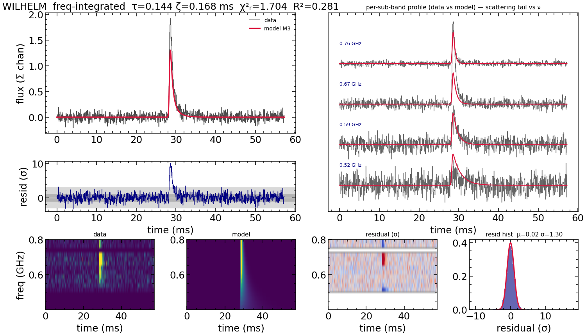
HAMILTON marginal
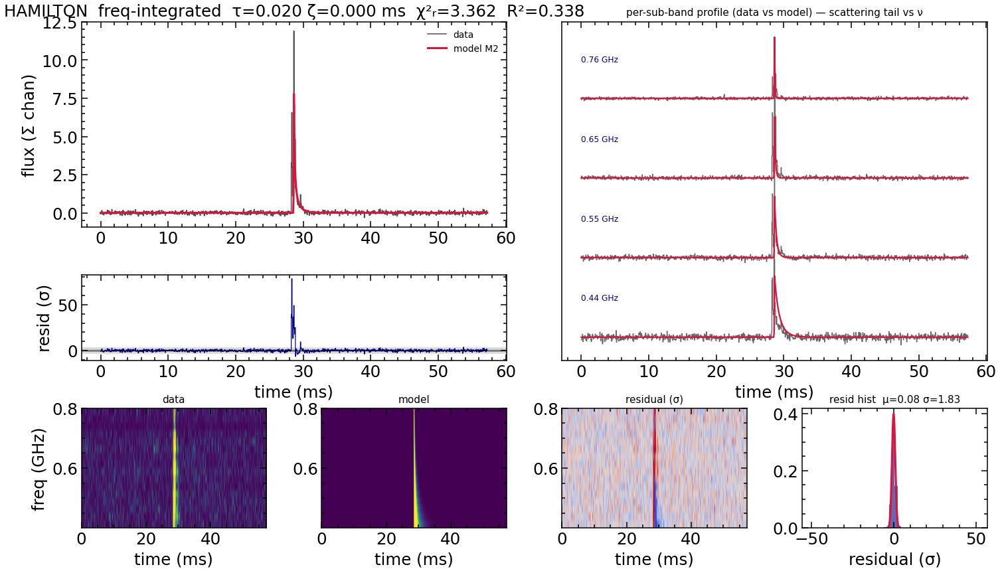
CHROMATICA poor fit
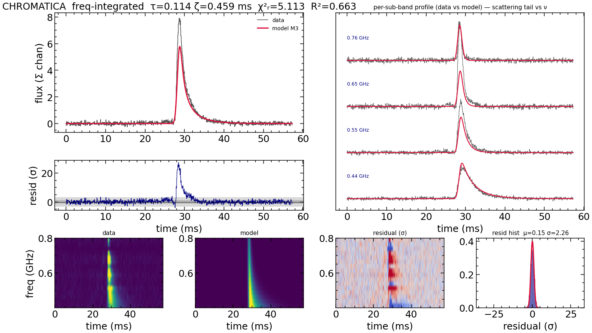
FREYA FAIL — under-dedispersed
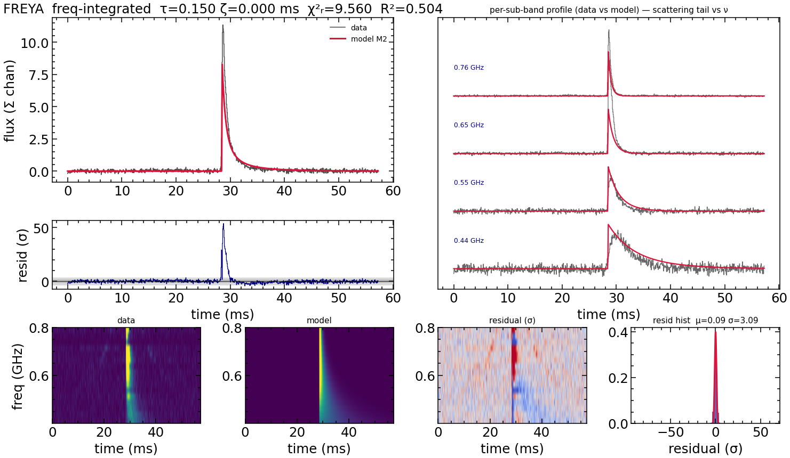
ZACH FAIL — under-dedispersed
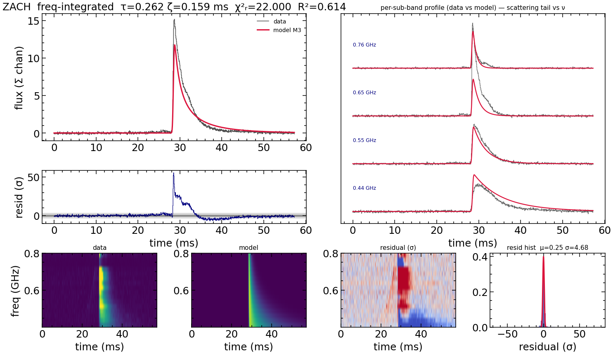
CASEY pending
Residual σ is the standard deviation of the per-channel, noise-normalized residuals; a correct fit gives σ≈1 with a white (structureless) residual map. χ²/dof and R² alone are ambiguous for faint bursts (low R² with χ²≈1). Generated by the FLITS scattering pipeline (plot_fit_quality). Pre-publication; do not redistribute.